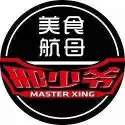
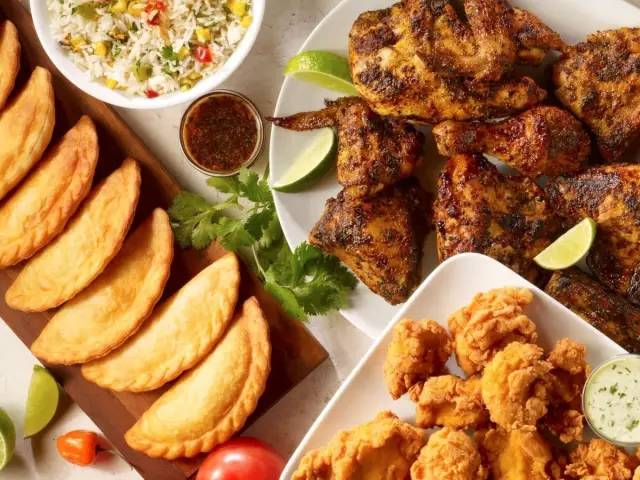
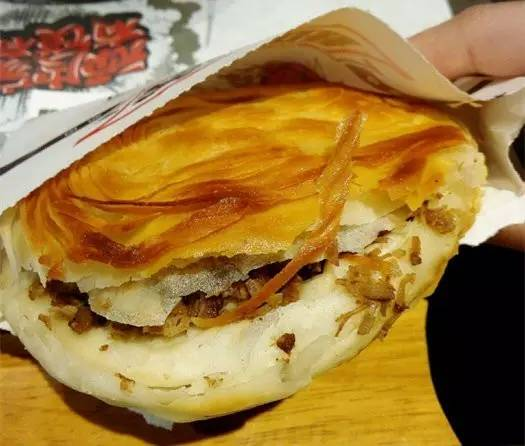
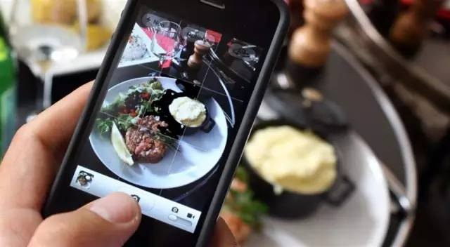
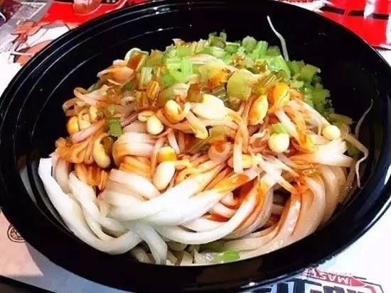

邢少爷仅靠一家店4个月内两次融资6000万 揭5大吸引投资人法宝
来源：红餐网
7月7日，餐饮品牌“邢少爷”对外宣布获得了5000万元A轮融资，估值达到2.5亿元。
邢少爷上次宣布融资是在3月，四个月内怎样可以拿到两轮融资？
在上市困难依然是一个行业共性难题，风险投资成为很多品牌扩张、打造势能的重要融资渠道。获得资本青睐的5大法宝，或许可以为创业者借鉴。
邢少爷融资5000万，2.5亿级别美食航母启动
邢少爷最先为人所知，是“卖肉夹馍的”。
因为之前已经有了一个西少爷，邢少爷也总是被拿来比较。邢少爷创始人邢志远要跟很多人解释，邢少爷并不只是卖肉夹馍。“准确来说这是一个特色美食的集合店，肉夹馍只是其中一个品类，我们还有河北的熏肉烧饼等其他地方美食。”
但这仍不是邢少爷的全部。按照邢志远的规划，邢少爷这个品牌将走出上海，在全国30个城市招募合伙人。在走向全国的过程中，除几款爆品保留之外，产品线都会根据当地的特色进行调整。
他对“爆款”尤其看重，这些特色爆款美食不一定每一款产品都供应全年，但会在特定的时间，推出一些爆款；在不同的季节不同的场景，提供给消费者不同的爆款美食。
邢志远描绘了一个比较大的版图，“邢少爷会是一个爆品集合店，我们也称之为美食航母。”
这个航母在今年4月份启动，位于上海虹桥机场附近的凌空SOHO，邢少爷开了第一家店。7月7日邢少爷对外宣布，拿到了5000万元A轮融资，领投方为慕槿投资。
1.顺势而为
口味定位国际化和广谱化
小吃品类的火爆，在这几年已经成为常态。不管是北京的西少爷、人人湘，还是广州的俏凤凰、遇见小面，乃至中部的姐弟俩，切入的品类都很小，肉夹馍、煎饼、米粉、土豆粉，貌似都上不了大雅之堂，其中不少甚至由地摊发展而来。
小吃单品，已经成为餐饮创业的优先选择，而在正餐休闲化的现在，小吃也已被更多消费者认可。
单品，尤其是单品小吃投资小、人工少、容易标准化，能在比较短的时间里开更多店面，形成品牌势能。试想，有几个人可以一下子开出几家湘鄂情试试？

如上所说，邢少爷切入的小吃都是各地的爆款，不管是肉夹馍米皮还是熏肉烧饼，都已经有了比较好的消费基础，所以在写字楼推出之后被白领们排队购买，是可以预料到的。
在红餐网主办的活动上，天图资本合伙人杨辉生曾总结资本喜欢的餐饮品牌，口味的国际化和广谱化是其中重要原因之一，比如肉夹馍，被称为汉堡的祖师爷，在中国大江南北都能接受。但同样是小吃，豆汁、臭豆腐恐怕就难以有这样广的接受度。
2.标准开路
选择好品类，想快速发展并占领品类，过去靠的是日积月累的口碑，如今的工艺流程化、标准化、去厨师化，也为资本看重。
回顾中国餐饮业的发展，手工一直是主要的制作方式。一直到现在，仍有厨师认为只有手工制作，才是真的餐饮业。
邢志远认为，这样纯手工的方式，不适合连锁，也无法去控制产品品质。“全国发展的话，我们就要想怎样让小吃工业化，这样能达到真正意义上的标准，产品质量问题也能得到解决。”
但这并不是否认手工在餐饮中的重要作用。邢志远说，邢少爷产品在烹制上达到标准化，并且要求口味如手工制作一般。这样的思路，也贯穿在运营其他地方美食的过程中。

肯德基、麦当劳的例子已经证明，做足标准化的产品才容易扩张，后厨队伍才能保持相对稳定。这些，都是资本喜欢看见的。
3.工厂＋外卖
第三方品牌入驻，透明化厨房监控品质
相当长一段时间内，小吃类都是以外带为主，如肉夹馍。小吃的生产比较容易，但附加值较低，仅靠堂食获得的利润有限。加上外卖，既可以释放厨房产能，还能能变相增加翻台率，提高利润所得。
邢少爷一开始，就将外卖作为了重要渠道之一，而根据邢志远的描述，这类似于“航母+巡洋舰”模式：“专属的APP上线后，线上服务也正式启动。一个大型工厂店周围设5家甚至是10家门店配合。工厂店负责生产，10家门店作为配送的支撑。”
而这些工厂店，除了生产邢少爷自有产品，还有合作的第三方品牌，如万好食品、早乐、乐肴居等12个品牌，在7月7日均入驻到了邢少爷平台之中。
邢少爷品牌总监周刚介绍，投资方所看重的，正是邢少爷的供应链打造能力。“本轮融资后，邢少爷将通过收购3～5个工厂来打造后方供应链，负责所有品牌产品的输出。”
这与开一家店再利用配送平台有些不同。“外卖平台只是提供了流量，他们并不对产品品质做监控。我们的工厂和出品门店是透明的，都可以去参观。”
4.品牌营销
微博、微信、网红直播，塑造品牌力
长期以来，餐饮业都比较注重产品，提及品牌总是将“老”作为主要竞争力。然而，一个品牌如果仅从文化维度来考量，并不具备太强的品牌张力，而投资机构恰恰会考察品牌的认知度和扩张能力。
这就要求一个餐厅在产品、环境、营销等消费者可以感受到的层面，都可以形成一个有机整体。产品做好在未来是很基础也是必须的，能吆喝好，才能有更高的品牌认知度，继而推动企业发展。
餐饮品牌的营销，最终是为了增加认知度，并与用户保持粘性关系。在这个层面，互联网餐饮人似乎已经天生有这种基因，他们懂得消费者的心理变化，并用多种手段对消费者进行引导或迎合。

早期，雕爷500万买的牛腩秘方，获得了极大的关注度；黄太吉的外星人大会，以及吃煎饼谈人生，让黄太吉最终成为了餐饮业内的一个现象级品牌。
品牌营销，这是包括邢少爷在内的新锐品牌都极度注重的，邢少爷甚至组建了专门的媒体运营中心，建了专业录影棚，专职导演、摄像一应俱全；同时，邢少爷在微博、微信、论坛、贴吧等新媒体阵地，拥有800个帐号1000万粉丝，在发布会进行的同时，7个上海当地的网红拿起了手机，在多个平台进行直播。
在本次发布会上，邢志远说我们不和百度、美团合作，我们用自己的产品和渠道就能和消费者保持紧密的沟通。
5.品质积累
管控整个供应链，永远追求好产品
但显然，仅靠营销也无法让一个品牌持续发展的，尤其在整个餐饮行业都在回归产品的大趋势中。
邢志远也意识到了这一点。他说，很多互联网品牌因为没有在餐饮业的沉淀，能不能做到匠心餐饮，“我们是怀疑的。”
在邢志远看来，邢少爷的优势就在这里。“我从韩国引进雪冰品牌，两年多时间我们已经发展了500多家门店。从行业积淀来说，通过这个韩式甜品品牌的运作，行业内的人会明白我们打造连锁品牌的能力。”

在4月末，邢少爷官方微信推送了一篇文章，里面有几张图片，是邢少爷团队去西安乡村和云南野外，找的东西分别是肉夹馍和酸角汁。“邢少爷是要追求好产品的，产品链我们要全部把控，从食材挑选到出品、配送。”
而在发布会上，邢志远也再次提及产品，“在强大的品牌营销之下，邢少爷会始终保证产品品质。”